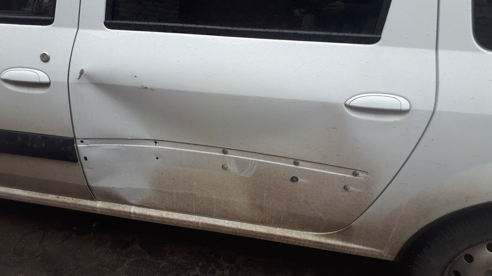
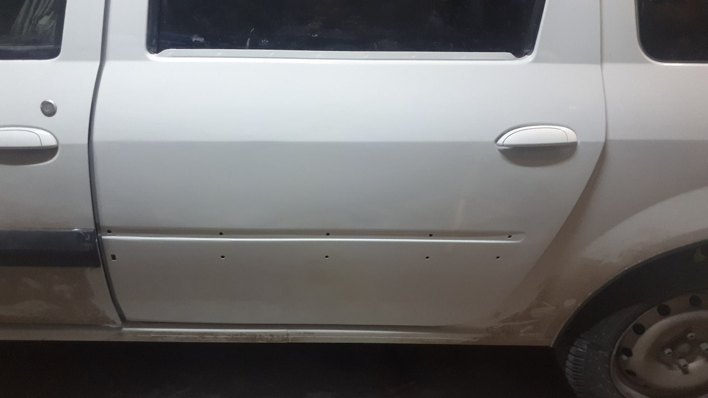
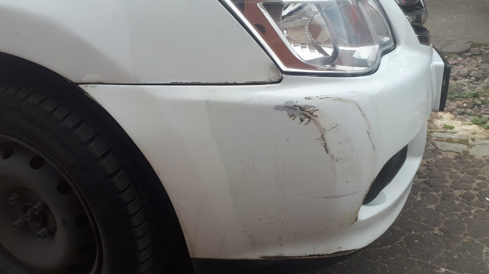
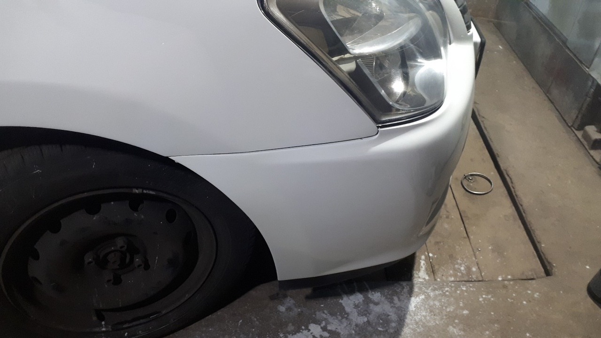

01
Дверь
Следы повреждений и потёртости на детали — и её вид после окрашивания.


M-КUZOV-LIVE · НАБЕРЕЖНЫЕ ЧЕЛНЫ
Восстановление кузова, сварка, покраска и полировка. Расскажите, что случилось с автомобилем, — обсудите работы и время осмотра.


Бампер и крыло · восстановление покрытия
ЧЕМ МОЖЕМ ПОМОЧЬ
Выберите, что нужно сделать. Объём работ, стоимость и сроки согласуйте с мастерской до записи.
ПОКРАСКА ДЕТАЛЕЙ
Посмотрите, как меняется вид покрытия на обычном автомобиле.
Следы повреждений и потёртости на детали — и её вид после окрашивания.


Позвоните и расскажите, какие детали требуют внимания и какие работы нужны.
Обсудите объём работ, стоимость, сроки и необходимость осмотра.
Уточните адрес, время осмотра и ориентир въезда перед поездкой.
Стоимость зависит от повреждений, нужных работ и объёма подготовки. Опишите задачу и уточните расчёт в мастерской.
Марку и модель автомобиля, описание нужных работ и фотографии повреждения, если они есть. Уточните удобное время для связи.
Сначала согласуйте время осмотра и уточните точный адрес и въезд в мастерскую по телефону.
Перед поездкой уточните адрес, въезд и удобное время осмотра.
ПЕРЕД ВИЗИТОМ
Уточните, как добраться до мастерской
Позвоните заранее: обсудите задачу, адрес и время. Так вы приедете к согласованному осмотру.
Позвонить · +7 906 324-27-07